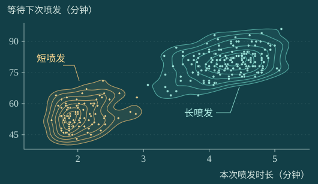
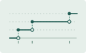
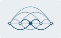
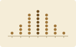
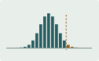

第一至四章讲义
理论、方法与应用
从经验分布和秩出发，用样本组合与重抽样估计总体，再检验观测到的差异有多罕见。


从经验分布出发，理解秩、次序统计量，以及从样本到统计泛函的估计。

对观测组合取平均，推导方差估计，理解跨组胜出比例与秩和的关系。

用有放回重抽样估计不确定性，结合间歇泉观测解释区间与检验。

从硬币与符号秩出发，读懂 p 值和功效，比较检验效率，并在零假设下重建参照分布。
按讲次查找 13 个交互实验。